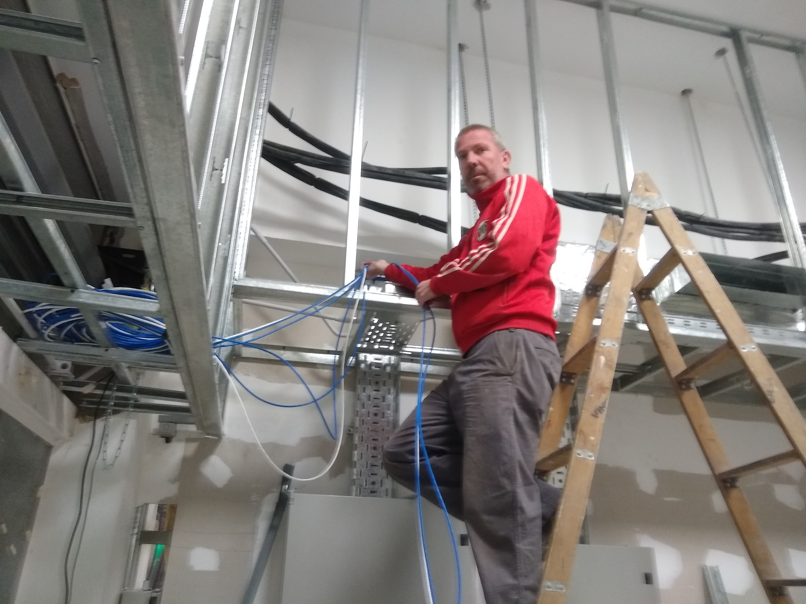

Acerca de mí
Mi nombre es Julio Martinez. Estoy curzando la carrera Tecnicatura en Desarrollo Web en la Universidad Nacional del Comahue. Tengo 47 años y me dedico a la reparacion de equipos informaticos desde los 17 años al principio como hoby , hoy es mi fuente de ingresos .
